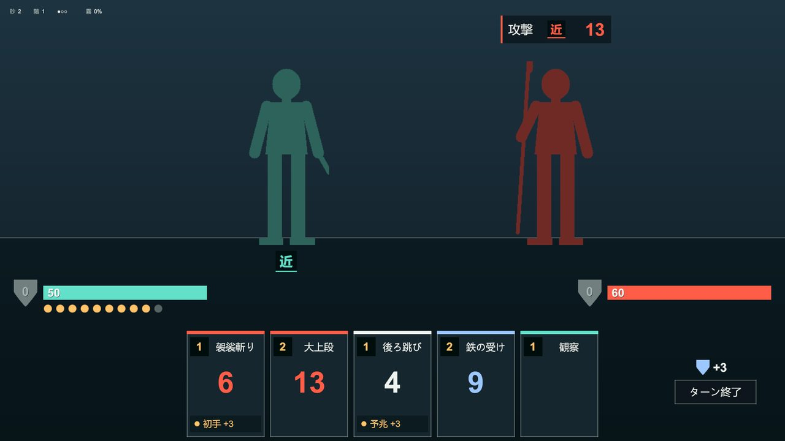
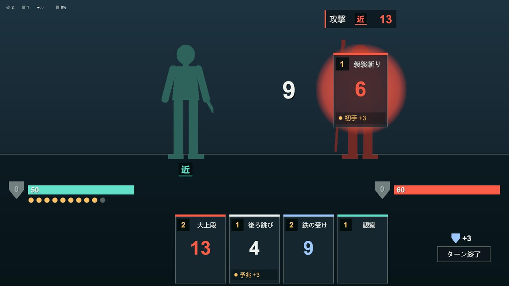
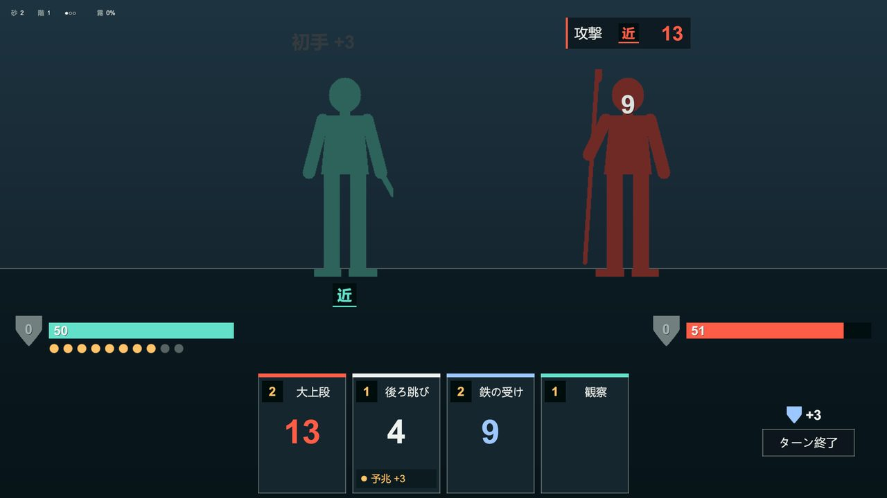
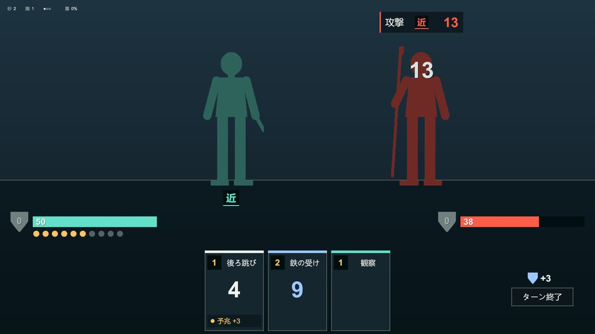
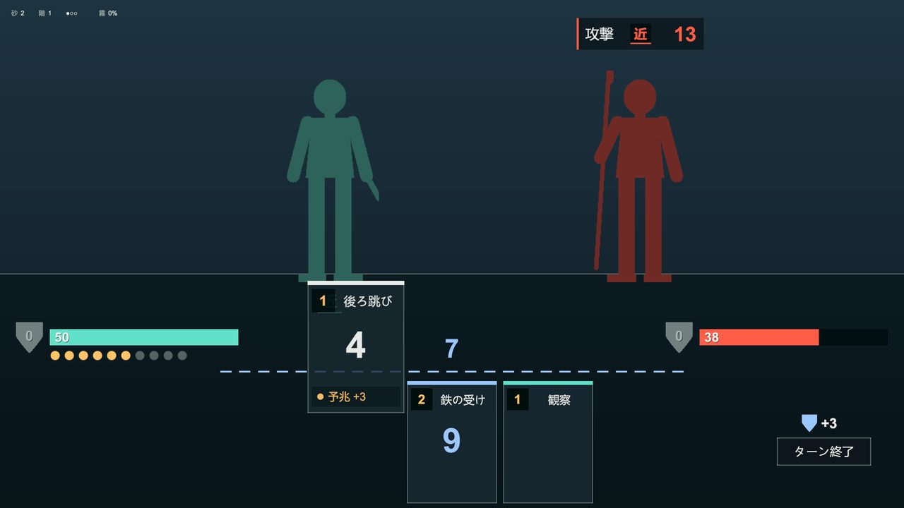
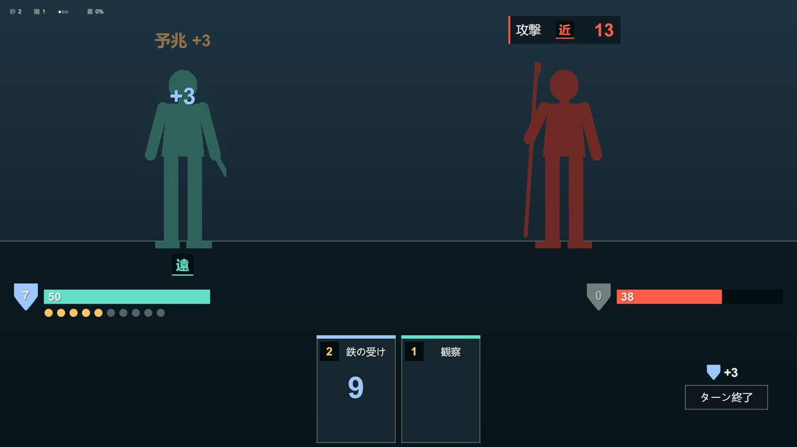
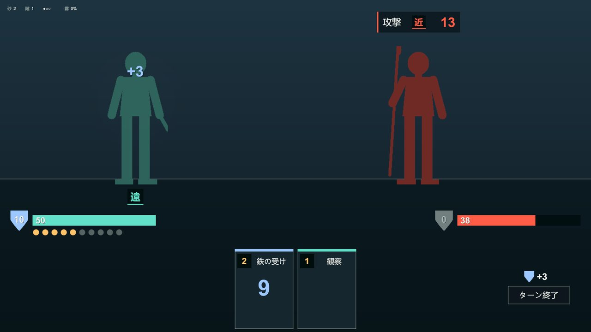
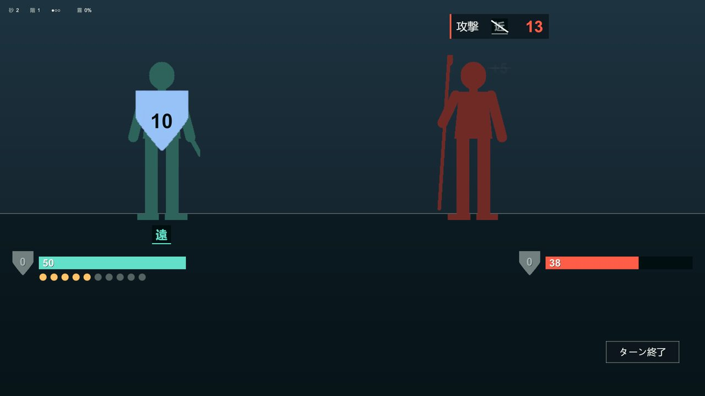
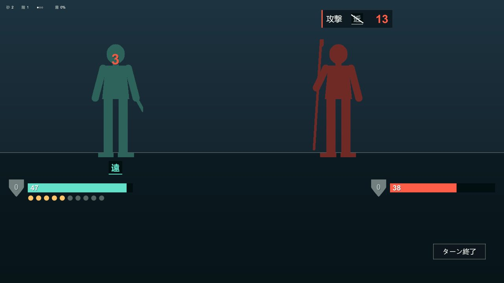

2026-09-19 / 検証 / original-card-battle（Unity: RPG-by-card）
プラン §4 の 7 つの出来事を BattleDepiction シーンで再生できます。順 2〜4 はドラッグ待ち、ほかは自動です。確認 4 つは全て通りました。残るのは人手の手触り確認と、Unity リポの push の判断です。
再コンパイル後のエラーと警告 0。EditMode 60 / 60（既存 54 + 描写 6）。dotnet test 54 / 54。Play で 7 つの出来事を 15 枚撮り、拡大して値・欠け・重なりを見た。
実際のマウス操作は Claude から試せない。下の手順で 5 分ほど。自動ドラッグ（デバッグ）では 3 枚とも規則どおりに確定した。
プラン §6 のとおり範囲外。画面は台本の値を映すだけで、威力も Guard も計算しない。
2560×1440 の Game ビューを区切りごとに自動保存し、左上の札・手札・予兆を切り抜いて拡大して読みました。縦線が緑は問題なし、黄は要確認です。Blocking はありません。









| 確認 | 結果 | 中身 |
|---|---|---|
| (1) sync → recompile → コンソール | エラー 0 | 警告も 0。途中で FigureView の名前衝突（既存 ArenaView.cs に同名）が 1 回出て、描写側を Depiction.View 名前空間へ入れて解消。 |
| (2) EditMode テスト | 60 / 60 | 描写の 6 件: 7 つが順に流れ切る / ドラッグ待ちは自動で進まない / 違う札は戻る / 皿の外は戻る / 自分向きは線の上だけ / 全ての合図が確定値を持つ。 |
| (3) dotnet test | 54 / 54 | BattleCore/ と BattleCore.Tests/ は無変更。 |
| (4) Play + 撮影 + 拡大 | 15 枚 | 値は全て台本どおり。文字の欠けなし。初回の撮影で見つけた 4 点（人型が背景に沈む / 特性なしの札に空枠 / 皿の予測値が札に隠れる / 浮き文字が上端で切れる）は直して撮り直した。 |
置き場は Unity リポの Assets/Prefabs/Depiction/ です。メニュー Tools > Depiction > Build Prefabs And Scene は、無いものだけを作ります。既にあるプレハブとシーンには触りません。作り直したいときは、その 1 つを消してからメニューを押します。
| プレハブ | View | 中身 | 台本から受け取るもの |
|---|---|---|---|
| Card | CardView | 190×260。コスト、技名、値、特性の行とランプ、属性色の帯 | CardFace |
| Figure | FigureView | 影絵、胸と頭の目印、足元の一字札。プレイヤーと敵で共用。SetSprite(Sprite) が立ち絵の差し替え口 | UnitFrame.HasRange / Range |
| StatusBar | StatusBarView | HP バーと現在値、Guard の盾、スタミナのピップ 10、状態チップ 6（付いた分だけ表示） | UnitFrame |
| OmenBadge | OmenBadgeView | 種別 + 咎める側の一字 + 値。外れたときの打ち消し線 | OmenFrame |
| Receiver | ReceiverView | 受け皿 340×340 と予測値 1 つ。当たり判定は皿の矩形 | DepictionEvent.PreviewText |
| ThrowLine | ThrowLineView | 点線 25 本と予測値 1 つ。線の Y がそのまましきい値 | DepictionEvent.PreviewText |
| CornerInfo | CornerInfoView | 左上 14 px・1 行。砂（ターン）/ 階 / 連戦の点 / 霧 % | CornerFrame |
静止時の固定ラベルは「砂」「階」「霧」の 3 字と、例外の「ターン終了」だけです。上帯・刻限・手番・敵名は出していません。位置は全てシーン上の物体から実行時に読むので、Editor で動かしても再生は壊れません（近間 / 遠間の立ち位置は PlayerNearSlot / PlayerFarSlot）。
差し替えるのは DepictionPlayer.Start の 1 行（TurnSliceScript.Build()）だけです。v4.2 コアの出力から同じ型を作る変換器を 1 つ書けば、View は変えずに済みます。いまの BattleViewModel（v3）との対応は次のとおりです。
| 描写の型 | v3 の出どころ | v4.2 で足りないもの |
|---|---|---|
CornerFrame | ターン、階層、瘴気 %（HUD の値） | 連戦の何戦目か |
UnitFrame | HP / 最大、Guard、スタミナ / 最大 | Range（近 / 遠。v3 は 3 段の距離）、状態のスタック |
OmenFrame | OmenView.KindLabel、PowerSpan | SideGlyph（咎める側の一字）。v3 の TargetRangeLabel は置き換え |
CardFace | CardView.InstanceId / Name / Type | Cost（固定コスト。v3 は投入量の Tiers）、Aim、TraitText / TraitLit |
DepictionEvent.PreviewText | TierView.PredictedDamage | 特性込みの予測値 1 つ |
Cue の列 | ストアのイベント列（攻撃、Guard、予兆） | 特性の発火、切り替え、構え、外れた加算、強弱の段（1〜4） |
強弱の段はコア側（か変換器）が確定値から決めて Cue.Intensity に入れます。View は段を大きさ・ヒットストップ・揺れに写すだけです。
Assets/Scenes/BattleDepiction.unity を開き、Play を押します。順 1 は自動で流れます。DepictionPlayer の autoPlayDrags を入れ、debugCaptureDir に保存先を書きます。どちらも既定は切です。Assets/_Recovery/（Editor の復旧用シーン）を外し、.gitignore に足しました。BattleScreenView（View v1.1）は、どのシーンでも再生開始時に自分を生成します。描写シーンでは DepictionPlayer.Start がその自動生成分だけを消しています。既存ファイルと test1.unity は無変更です。シーンが増えるなら、v1.1 側の自動起動に条件を付けるほうが素直です。.gitattributes の設定と同期元の改行が合っていません。rm -rf が権限で拒否されたので、プレハブの作り直しはやめ、Editor 上で 2 か所を手直ししました（Card の特性枠の参照、Receiver の予測値の位置）。生成スクリプトにも同じ値を入れてあります。sunbreak-pro/RPG-by-card）への push。初回コミットと描写のコミットはローカルだけです。初めての公開操作なので止めています。